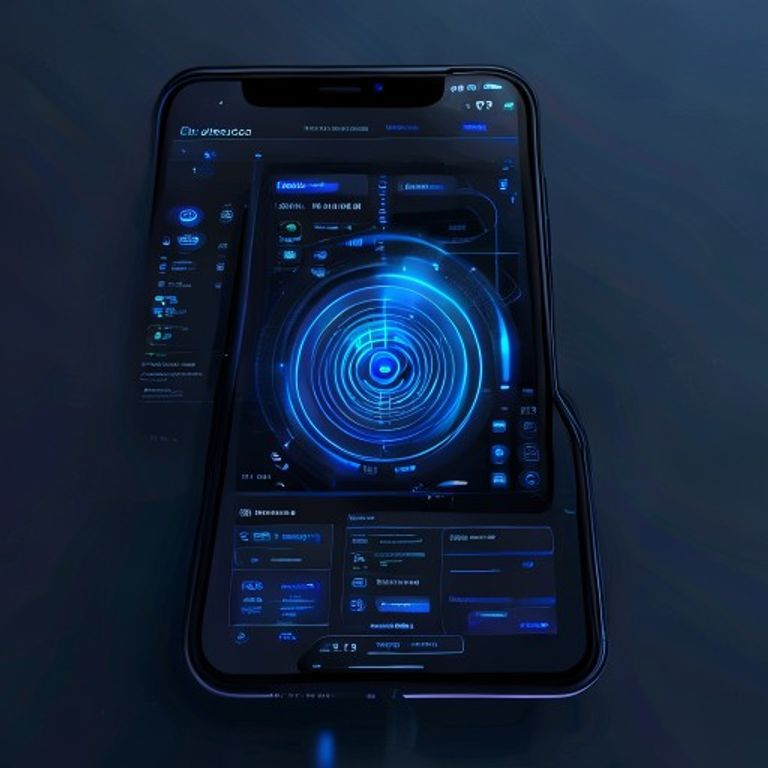
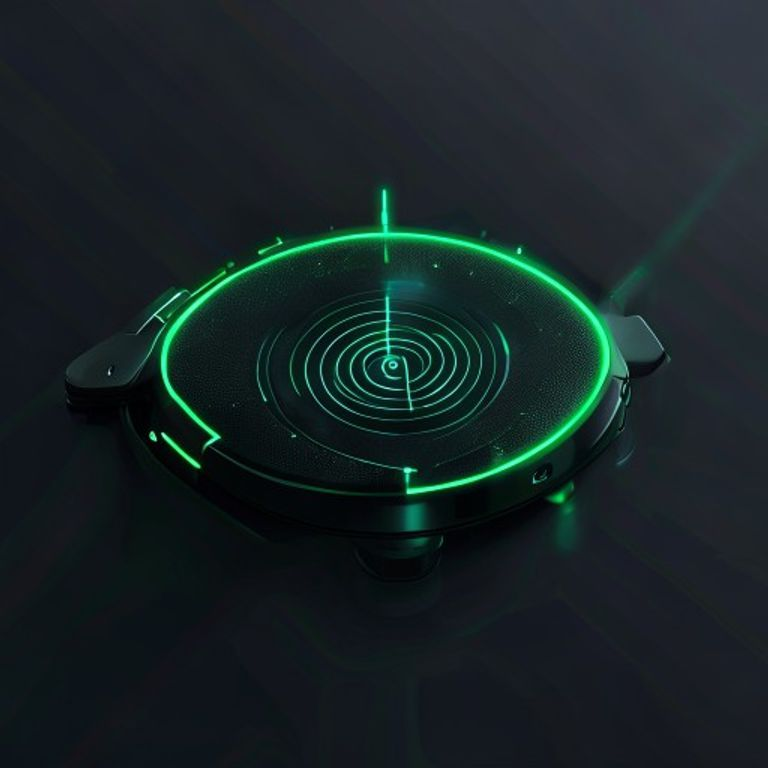
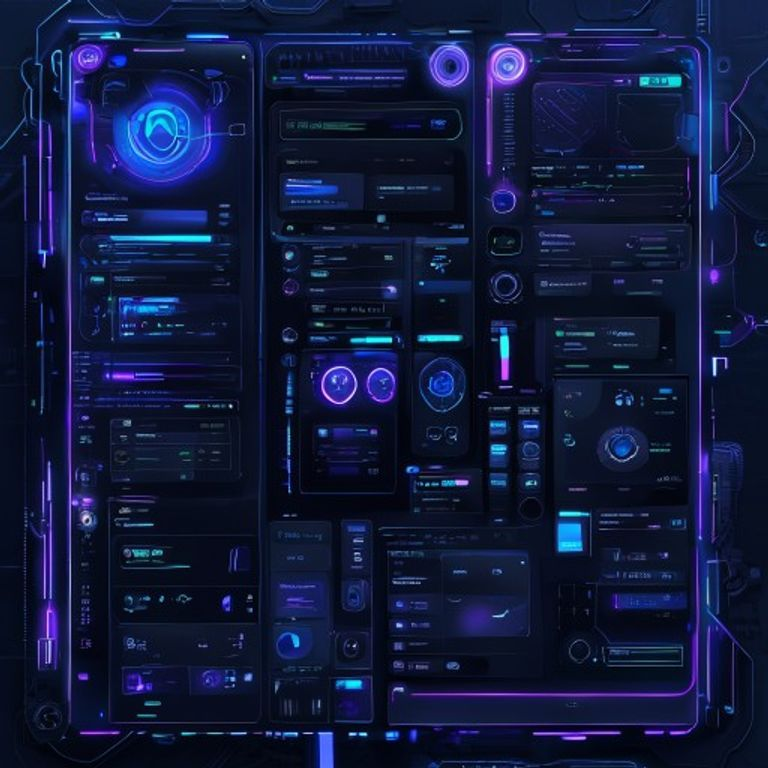

JackScanner App - UI Mockups
Generated via Pollinations AI (free, no signup)
1. HOME SCREEN - Axon BLE Scanner

Radar sweep animation, device detection, start scanning button
2. PUZZLE SCREEN - BTC Puzzle Tracker
Bitcoin puzzle list, balance display, transaction count, key ranges
3. SCANNER SCREEN - Device Detection

Axon device detection interface, radar visualization
4. SETTINGS SCREEN

Configuration panel, dark cyberpunk theme
Color Scheme
- Primary: #00aaff (Neon Blue)
- Secondary: #00ff88 (Neon Green)
- Accent: #ff6600 (Orange)
- Background: #0a0a0a (Dark)
- Surface: #111111
- Text: #ffffff
Key UI Elements
- Radar sweep animation (concentric circles)
- Glowing neon borders
- Bitcoin address display
- Balance & transaction cards
- Horizontal scrollable puzzle selector
- Dark cyberpunk aesthetic